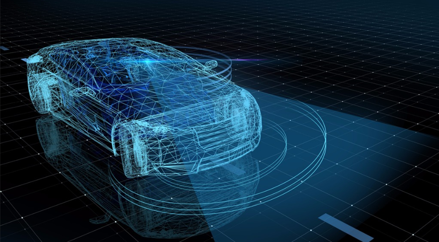

Conheça mais sobre nossos veículos
Carros autônomos são aqueles que oferecem algumas funções autônomas importantes da condução e uma direção sem qualquer interferência humana. Esse tipo de veículo foi planejado com o intuito de reduzir alguns dos problemas mais comuns nas vias: os acidentes, a poluição sonora, os engarrafamentos e a alta emissão de gases poluentes.
Os sensores espalhados por todo o veículo, possibilitam que ele seja guiado sem o auxílio humano e somente através da inteligência de computadores. Entre as suas competências, os sensores são responsáveis por identificar pedestres, outros automóveis e qualquer outro obstáculo que possa aparecer nas pistas.
Um dos principais itens neste grupo é o sensor LiDAR, que usa luz refletida para medir distância e profundidade para efeitos de câmera e realidade aumentada e assim detectar obstáculos na pista.
A interação realizada em tempo real entre esses sensores e o computador central do veículo é o que permite que as tomadas de decisão sejam feitas de maneira praticamente imediata. Nos dias de hoje, a tecnologia já está evoluída ao ponto dos carros autônomos serem capazes de lidar com semáforos quebrados e ruas fechadas, e até mesmo com o trânsito desviado, por exemplo.
A inteligência artificial utilizada para o funcionamento dos carros autônomos consegue analisar a pressão dos pneus, acabar com os chamados “pontos cegos”, utilizar uma rápida resposta de frenagem em possíveis situações de perigo, se ater aos limites de velocidade da estrada, detectar mudanças de faixa, mudar a suspensão do veículo sempre que necessário e ainda realizar as mais diversas manobras sem que ocorram colisões.

Carros Autônomos no Brasil
No Brasil, levando em consideração a classificação da SAE, há carros autônomos em circulação, com assistência ao motorista que podem ser compreendidas nos níveis 1 e 2. Assim, são aqueles veículos que exigem as mãos do motorista no volante.
Os carros autônomos oferecem tecnologia de ponta, o que já não é barato. O perfil elétrico (desconsiderando os sistemas de piloto automático) também coloca esses veículos em um topo de valores para a compra pelas pessoas.
As mudanças necessárias para a implementação dos carros autônomos no dia a dia das cidades ganham um tom especial em critérios de legislação de trânsito e de infraestrutura. Além disso, o motorista poderá ter dificuldades na hora de confiar que a inteligência do veículo “é maior” que a dele para poder assumir a direção.
O especialista estima que China e EUA possam sair na frente nesse aspecto, pois as empresas da Europa tendem a ser mais regradas: a indústria espera a iniciativa do governo. Nos Estados Unidos, aliás, já há estados que permitem ao veículo autônomo rodar em vias públicas para testes realizados por empresas desenvolvedoras da tecnologia. Um deles é a Califórnia.
Qual a tecnologia por trás dos carros autônomos?
Para possibilitar a independência de um motorista digerindo os carros, há diversas inovações que estão sendo desenvolvidas, aperfeiçoadas e integradas nos carros autônomos. Veja alguma dessas inovações:
São os responsáveis por detectar as características ambientais e passar esses dados ao computador de bordo. Atualmente, os mais utilizados são as câmeras, os radares, os sonares e os LIDARs.
Também chamada de câmera estéreo, é um dispositivo que utiliza duas ou mais lentes para criar quadros de diferentes perspectivas. Dessa forma, consegue ter noção de profundidade (3D), simulando a visão humana.
A câmera infravermelha permite uma visualização precisa em ambientes com pouca ou nenhuma luminosidade. Por meio de sensores, esse equipamento é capaz de identificar objetos pela variação de temperatura, captando sua radiação infravermelha, invisível a olho nu.
Um radar emite ondas de rádio em uma determinada direção, que reverberam nos obstáculos. Ao medir a velocidade e a intensidade desse retorno, consegue ter noções de tamanho e distância.
O sonar funciona de forma parecida ao radar. A diferença é que, em vez de ondas de rádio, usa ondas sonoras, inaudíveis ao ouvido humano.
O LIDAR também segue a lógica dos dois dispositivos anteriores. No entanto, utiliza-se de pulsos de laser, que formam milhares de pontos luminosos, para fazer a varredura do ambiente. Além de ter um sinal mais rápido, o LIDAR permite cobrir uma área mais vasta, em 360°, e com maior precisão.
O Controle Eletrônico de Estabilidade é a mesma tecnologia usada em diversos modelos, inclusive no Brasil. Nos carros autônomos, é o responsável por calcular e fazer correções na condução de acordo com a velocidade de cada roda, a inclinação e a guinada do veículo.
O servofreio eletromecânico a vácuo, chamado iBooster, é capaz de gerar pressão controlada nos freios em menos de 120 milissegundos. Isso é três vezes mais rápido do que os sistemas de freios convencionais, tornando o veículo mais seguro em frenagens de emergência.
Para que o veículo possa se guiar pelas cidades, é preciso equipá-lo com mapas atualizados e controlar sua localização. Por isso, utilizará equipamentos de GPS integrados ao velocímetro e ao hodômetro. Assim, o computador consegue calcular sua posição mesmo na falta do satélite.